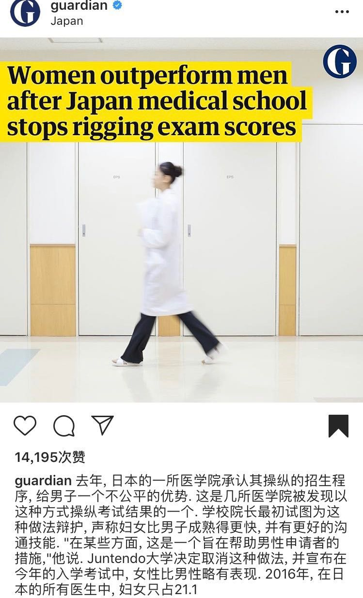

公费师范生政策是什么？
其中暗含着哪些以性别为基础的双标？
这项政策的制定对面临专业选择的学生意味着什么？
高考志愿填报已经陆续结束，很多学生即将开始新的大学生活。在此之前，我们想和大家一起来讨论讨论公费师范男生的政策。以福建省为例，公费师范生安排在本科提前批录取，执行的是一本的分数线。从其往年的录取情况来看，当部分地市的常规志愿生源不足时，还可在本一线降低20分征求志愿。
说到师范类的专业，我们的社会通常鼓励女生去当老师，而且经常听到有人会不自觉地说“女生适合读师范专业，将来好找工作”。但是，事实情况真的是这样吗？据了解有的省份就平衡比例为由，开展了公费师范生的政策。相比较其他职业来说，社会性别期待更倾向于建构女性适合师范类专业、女性适合教师类职业，但同时又在师范类专业的招录中给男生非常大的优待，这是否有些矛盾？公费师范生的政策什么？这项政策的制定对面临选择专业的女生意味着什么？对女性将来在教师岗位上就业意味着什么？
01
免费（公费）师范生教育政策
首先来了解一下免费师范生政策。该政策在2007年实施，教育部六所直属师范大学（北京师范大学、华东师范大学、东北师范大学、华中师范大学、陕西师范大学、西南大学）具有招收免费师范生的资格。2018年8月10日，“师范生免费教育政策”调整为“师范生公费教育政策”，调整了履约任教年限，改进了履约管理政策，加大了政策保障制度，给了选择公费教育的学生更多的空间。
除了部属类师范院校外，2013年开始江西、山东、山西、河南、福建、江苏、广西、湖南、四川和维吾尔族自治区等十余省份也开始在本省的师范院校招收免费师范生。
02
福建省公费（免费）师范男生教育政策概况
在国内，福建省不是第一个公开招录免费师范男生的省份，自然也不是最后一个。江苏省是第一个在高考招录中明确规定招收300名免费幼师男生的省份，到2016年为止，已经陆续有广西、福建、湖南和四川5个省加入了免费师范教育仅对男生开放的行列。
继福建师范大学后，2015年福建省政府开始在闽南师范大学等院校推行免费师范生教育（只招收福建省生源且只招男生）。这两所师范院校的相关老师称这是福建省统一的政策。从2015年福建师范大学有资格招收免费师范生开始，福建省就连续几年以“小学、幼儿教师队伍性别结构矛盾突出、男教师缺位，‘阳刚教育’缺位”为由，开展小学、幼儿师范男生免费教育试点，只对男生开放免费师范教育。该政策导致在福建省只有男生可以享受免费的师范教育，并且在生源不够的情况下，还可以酌情降分录取。
03
2019年福建省公费（免费）师范男生政策
福建省主要的5所师范类院校分别是：福建师范大学、闽南师范大学、集美大学、泉州师范学院以及宁德师范学院，这5所院校对公费（免费）师范男生教育政策的态度不同。
福建省师范类高校2019年最新招生计划表中，福建师范大学提前批（文史类）小学教育招收40个公费师范生（收费标准：免费），全部为男生；提前批（理工类）小学教育招收160个公费师范生（收费标准：免费）。闽南师范大学提前批师范类（理工/文史）的小学教育公费师范生均面向男生，共招收80人。值得关注的是，宁德师范学院、集美大学和泉州师范学院均开设了小学教育专业，因为没有免费师范生的优惠政策，在招生计划中也没有对性别的限制要求。
（提前批次（文史/理工）小学教育专业只招收男生）（向右滑动，显示更多）
04
女大学生曾申请审查“师范男生免费教育政策”
2016年，教育部直属师范类院校的一位大四女生王一梅（化名）偶然间发现，福建省开展的“小学、幼儿师范男生免费教育试点”，将“免费师范生政策”限定于男生，并且适当降分录取，把女生排除在外。在王一梅看来，这并不符合《妇女权益保障法》中“学校在录取学生时，除特殊专业外，不得以性别为由拒绝录取女性或者提高对女性的录取标准”的要求。
王一梅认为，“这一政策不以学识能力为标准，而以性别为条件，是明显的招生性别歧视。当地教育部门为了招男生而主动降低标准，不惜将优秀的女生拒之门外。”2016年9月22日，王一梅向福建省法制办邮寄了《就“师范男生免费教育”相关条款规范性文件合法性审查申请书》，要求对福建省的师范生免费教育试点办法进行违宪性审查。
05
“阳刚教育”与性别红利的关系
女教师多，小男孩会变得“娘炮”；增加男教师，弥补“阳刚教育”的缺位。这是媒体上常见的说法。小学教育重要吗？当然重要。在小学教育专业中加入一些相比较来说不那么优秀，却凭借优惠政策、性别优势的男生，真的会对小学教育专业带来什么益处吗？真的能够增强官方所谓的“阳刚教育”？
我们暂且不讨论“阳刚教育”和“娘炮理论”中深含的性别歧视和刻板印象。小学生在校时间大概是6小时左右，也就是说一天中只有1/4时间是在学校度过的，假设小学生（男生）身边全是男老师，那么该小学生一天中只有1/4的时间能够接受“阳刚教育”。所以我们为什么不提倡父亲回归家庭照顾孩子呢？这样孩子一天就能有3/4的时间接受来自父亲的“阳刚教育”。在所谓的“阳刚教育”方面，将小学教育中男老师比例提升的效果远远比不上呼吁父亲回归家庭照顾孩子。官方呼吁“阳刚教育”的理由远远不足以遮盖其中的性别歧视与对男性的性别红利。
06
隐性歧视：日本医学院停止招生性别歧视后
国内的招录考试中除了免费师范生给男性的优惠政策之外，高考提前批外语类专业的招录中采用“女高男低”的录取原则，部分省份男女生分差甚至高达50多分；军队院校在招生的过程中不仅采用“女高男低”的录取原则，并且严格限制招收女生的比例该专业招生总人数的15%。这只是众多显性歧视中的冰山一角，在很多招录的面试环节中存在着多少隐性歧视，具体的数量我们不得而知，甚至很难找到证据提出质疑。如今在社交媒体上讨论性别歧视现象的趋势是：只要质疑XX存在性别歧视，就会被称为要权利不要义务、要特权的“田园女权”称号。
（向右滑动，显示更多）
国内招录考试（非面试环节）中存在的大多为显性性别歧视现象，即在性别比例或分数线上，给男生优待，给女生阻碍。与国内招录考试中存在的显性性别歧视现象不同，日本去年爆出了医学院招录考试中的隐性性别歧视。从另一角度看，这也让我们明白虽然隐性性别歧视现象很难找到证据，但不代表没有证据。@就业性别歧视监察大队曾报道，2018年日本多所医学院被爆蓄意降低女考生分数已经长达十多年，以提高男性毕业生的比例。这些大学被迫停止招生性别歧视，日本顺天堂大学医学院最近的一次入学考试，女性通过率8.28%，男性通过率7.72%。

THE END
写在最后
以上所讨论的例子也只是冰山一角。在女性多的行业或者学科中，男性会受到优待，政策制定者们通过各种优秀政策使男性的比例上升；但在目前由男性主导的行业或者学科中，并没有这种优惠政策来提高女性的比例。我们只要稍微质疑女性比例少的问题，就会被攻击“不适合你们女性/谁让你们女性能力不行”。这样的双标是真实存在的。因为女生太优秀了，为了平衡比例，所以可以降低对男生的要求。这并不是对女生的抬举，而是非常明显的提高了对女生的门槛。
专业应该是由女性自主选择的，社会不应该对此加以阻碍。适合女性的专业给了男性足够多的性别红利，所谓适合男性的专业更是给了女性更多高的门槛。我们质疑的是所谓平衡性别比例之下的双标与深含其中的性别歧视。
我们现在或许无法直接撼动政策制定者，但我们不能对身边的性别歧视问题闭口不谈，甚至对此感觉麻木、认为与自身毫不相关，女性是一个整体，是一个身份，我们的一言一行都可以作为抗争的武器。
参考资料：
1. 男生免费师范教育：性别歧视？性别失衡？还是老师工资太低？http://m.sohu.com/a/219409757_387174
2. 福建“师范男生免费教育”政策被女大学生提请审查
https://www.zhonghongwang.com/show-56-24038-1.html
欢迎留言，谈谈你的想法以及你身边的性别歧视现象